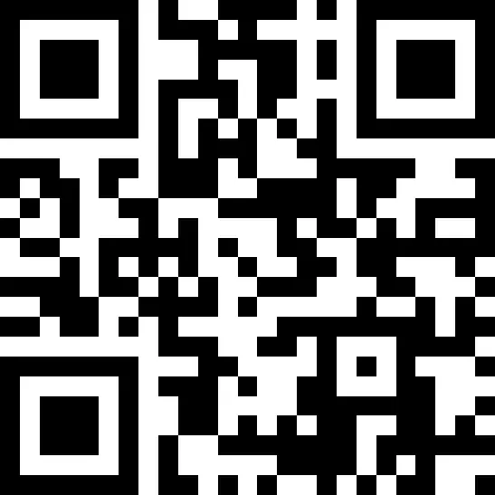

Faça sua doação
Sua contribuição nos ajuda a continuar espalhando a Palavra de Deus, apoiando projetos, eventos e ações que transformam vidas. Cada doação, independentemente do valor, é um ato de fé e amor que fortalece nossa missão de alcançar mais pessoas com a mensagem de Cristo. Agradecemos por fazer parte desta obra e por caminhar conosco nessa jornada de evangelização.

Aponte a câmera do seu celular para o QR Code acima
"Cada um dê conforme determinou em seu coração." — 2 Coríntios 9:7